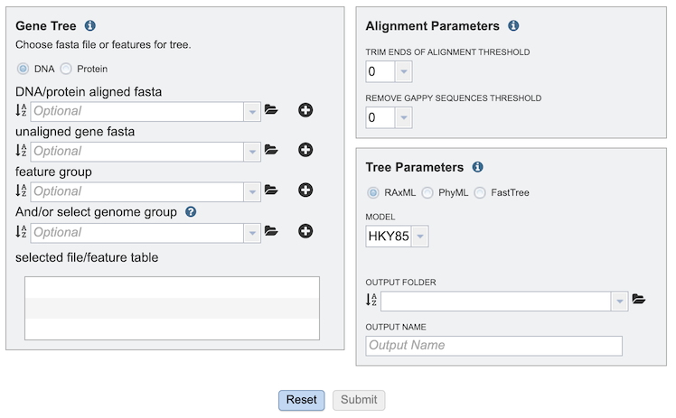
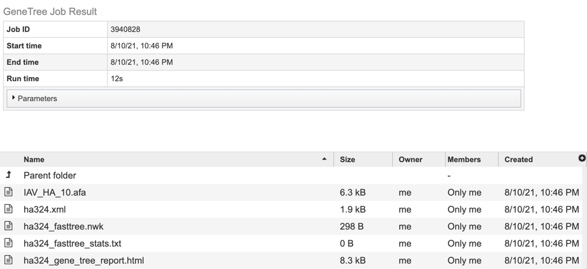

Gene Tree Service¶
Overview¶
The BV-BRC Phylogenetic Tree Building Service enables construction of custom phylogenetic trees built from user-selected genomes, genes, or proteins. Trees can be built based on either nucleotide or protein input sequences. The “FastTree” option computes large minimum evolution trees with profiles instead of a distance matrix. [1,2]. We also offer two maximum likelihood tree building algorithms: PhyML [3] and RaxML [4]. User-defined settings are required for either. PhyML and RaxML infer a more evolutionarily accurate phylogenetic topology by applying a substitution model to the nucleotide sequences. This algorithm is best applied to datasets containing:
fewer than 100 very long sequences, and
between 100 and 1,000 small or medium length sequences.
The service returns a Newick file which can be rendered in the interactive Archaeopteryx Tree Viewer in the BV-BRC or downloaded and viewed in other software.
See also¶
Using the Service¶
The Gene Tree submenu option under the “SERVICES” main menu (Viral Services category) opens the phylogenetic tree input form. Note: You must be logged into BV-BRC to use this service.

Options¶
Several options exist for tree building. Below is a description of input, output, and parameter options.

Comparison Genomes Selection¶
The GeneTree Service allows selection of multiple genomes, genes, or proteins (features) for inclusion in the tree. After selection of an item in any of the boxes, clicking the “+” button adds the item to the “selected file/feature table” box below.
DNA/PROTEIN: Selects either nucleotide or protein-based tree construction.
DNA/protein aligned fasta: Allows upload of aligned sequence fasta file from the user’s computer or workspace.
Unaligned gene fasta: Allows upload of unaligned sequence fasta file from the user’s computer or workspace.
Feature group: Allow selection of a feature group from the workspace.
(And/or select) genome group: Allow selection of a genome group from the workspace.
Selected file/feature table: Lists all input sequences that will be included in the tree.
Parameters¶
Alignment Parameters¶
Trim ends of alignment threshold: Sets threshold for trimming ends of the alignment.
Remove gappy sequences threshold: Sets threshold for removing gappy positions from alignment extremities.
Tree Parameters¶
(Tree algorithm): Selects from among the following tree-building algorithms: RaxML, PhyML, or FastTree.
Model: Allows selection of the appropriate evolutionary model. Options will change based on whether user is aligning nucleotide or protein sequences:
Nucleotide: HKY85, JC69, K80, F81, F84, TN93, GTR
Protein: LG, WAG, JTT, Blosum62, Dayhoff, HIVw, HIVb
Output folder: The workspace folder where results will be placed.
Output name: User-specified label for the results of the tree-buidling analysis job. This name will appear in the workspace when the job is complete.
Buttons¶

Reset: Resets the input form to default values
Submit: Launches the job. A message will appear below the box to indicate that the job is now in the queue.

Output Results¶
Clicking on the Jobs indicator at the bottom of the BV-BRC page open the Jobs Status page that displays all current and previous service jobs and their status.

Once the job has completed, selecting the job by clicking on it and clicking the “View” button on the green vertical Action Bar (red arrow) on the right-hand side of the page displays the results files (red box).

The results page will consist of a header describing the job and a list of output files, as shown below.

The service generates several files that are deposited in the Private Workspace in the designated Output Folder. These include:
.afa – the alignment file in fasta format.
.xml – PhyloXML tree format file with genome IDs as leaf nodes
.nwk – Newick tree format file with genome IDs as leaf nodes.
stats.txt – Text file containing the statistics on the tree. May include the number of genomes in the tree, the number of proteins aligned, the number of amino acids included in the alignment, the number of genes (CDS) in the alignment, and/or the number of nucleotides.
Tree_report.html – Web viewable file displaying the rendered tree and tree statistics, including the number of genomes, proteins, and genes used in building the tree. This file will be created even if the tree cannot be built and will provide information to understand what went wrong.
References¶
Price MN, Dehal PS, Arkin AP. FastTree: computing large minimum evolution trees with profiles instead of a distance matrix. Mol Biol Evol. 2009 Jul;26(7):1641-50. doi: 10.1093/molbev/msp077. Epub 2009 Apr 17. PMID: 19377059; PMCID: PMC2693737.
Price MN, Dehal PS, Arkin AP. FastTree 2–approximately maximum-likelihood trees for large alignments. PLoS One. 2010 Mar 10;5(3):e9490. doi: 10.1371/journal.pone.0009490. PMID: 20224823; PMCID: PMC2835736.
Guindon, S. and Gascuel, O., (2003) Syst Biol. 52: 696-704
Stamatakis, A. et al. (2005) Bioinformatics 21: 456-463